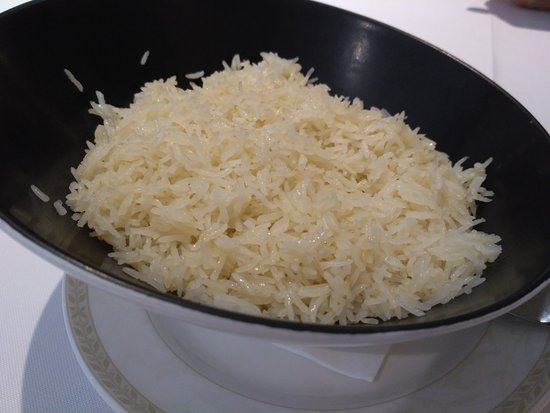

arroz

Descrição:
Ingredientes:
Como fazer: (peguei de um cara no reddit vlw cara que postou o guia de culinaia basica para vagabundos de primeira viagem)
- Sabendo das medidas, despeje o arroz na panela com o sal (meia colher já basta) e um fio de óleo, "frite" o arroz mexendo com uma colher, isso vai fazer com que ele fique soltinho e uniforme, após mexer bem, despeje a água, independente da medida de arroz, a água deve ficar no mínimo de dois até três dedos acima do arroz, tampe a panela, mas deixe um pedaço aberto para não criar pressão e deixe cozinhar.
- Para saber o ponto exato de desligar o fogo, observe se não tem água borbulhando no fundo, essa parte é bem no olhômetro e ouvidômetro, geralmente quando você não vê mais fumaça e água no fundo, é o ponto para desligar. Após isso, o arroz está pronto para consumo.
- Você pode até comer arroz puro se estiver na extrema larica, porém o melhor jeito de consumir é fazer um molho espesso para agregar no sabor. Pelo o arroz ser neutro, o molho que o acompanha deve ser bem temperado, então tente investir em temperos como cominho, pimenta-do-reino, açafrão, são ótimos para melhorar o sabor final.